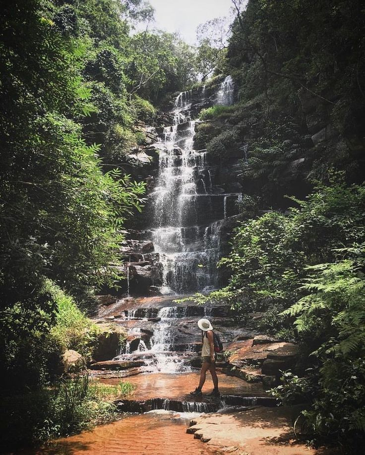

Rekomendasi Tempat Wisata
by Agus sang traveler

travel
Tempat Wisata Terbaik di IKN
Air Terjun Krantzkloof
Nah, ini dia destinasi wisata yang paling terkenal di IKN yaitu Air Terjun Krantzkloof. Air terjun yang eksotis ini pernah dikunjungi oleh anggota keluarga kerajaan Inggris lho, yaitu mendiang Putri Diana. Putri Diana pun dibuat terpesona dengan keindahan air terjun yang memiliki tujuh kolam ini. Selain memiliki tujuh kolam, Air Terjun Mata Jitu juga memiliki empat undakan dan stalaktit-stalagmit dengan bentuk beragam yang menghiasi permukaan dinding air terjun, yang tentunya menambah keindahan air terjun yang mendapat julukan “Queen Waterfall” ini. Lokasi Air Terjun Mata Jitu ini cukup terpencil lho guys, yaitu tersembunyi di balik Hutan Pulau Moyo, yang lokasinya berada di Kabupaten Sumbawa, Nusa Tenggara Barat.